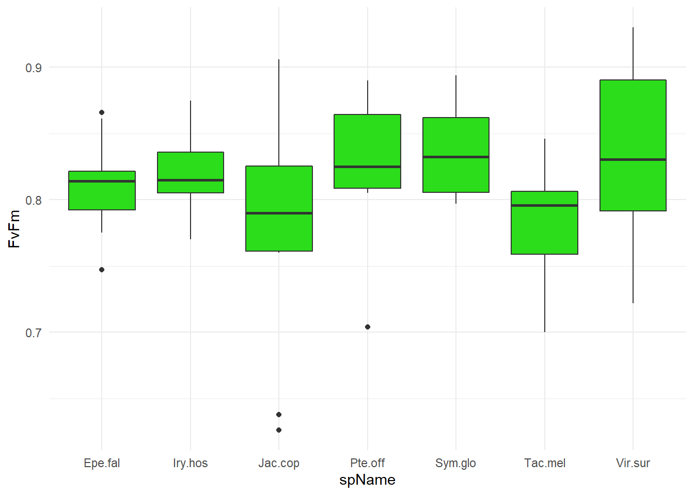

This book is in Open Review. I want your feedback to make the book better for you and other readers. To add your annotation, select some text and then click the on the pop-up menu. To see the annotations of others, click the in the upper right hand corner of the page
Chapter 3 Measurements
3.1 Ecophysiology trait measurement
Import data
Leaf thickness
Seedling heights
Stem diameter
\(\pi_{TLP}\)
##
## Shapiro-Wilk normality test
##
## data: Ptlp$Ptlp
## W = 0.96004, p-value = 0.06093##
## Shapiro-Wilk normality test
##
## data: logPtlp
## W = 0.97547, p-value = 0.3089## # A tibble: 21 x 8
## .y. group1 group2 p p.adj p.format p.signif method
## <chr> <chr> <chr> <dbl> <dbl> <chr> <chr> <chr>
## 1 Ptlp Eperua falcata Iryanther~ 2.51e-1 1 0.25056 ns T-test
## 2 Ptlp Eperua falcata Jacaranda~ 9.43e-1 1 0.94279 ns T-test
## 3 Ptlp Eperua falcata Pterocarp~ 6.94e-2 0.69 0.06942 ns T-test
## 4 Ptlp Eperua falcata Symphonia~ 6.14e-4 0.012 0.00061 *** T-test
## 5 Ptlp Eperua falcata Tachigali~ 1.01e-1 0.81 0.10142 ns T-test
## 6 Ptlp Eperua falcata Virola su~ 1.54e-3 0.028 0.00154 ** T-test
## 7 Ptlp Iryanthera hostmannii Jacaranda~ 1.42e-1 0.85 0.14224 ns T-test
## 8 Ptlp Iryanthera hostmannii Pterocarp~ 3.77e-1 1 0.37686 ns T-test
## 9 Ptlp Iryanthera hostmannii Symphonia~ 6.22e-3 0.1 0.00622 ** T-test
## 10 Ptlp Iryanthera hostmannii Tachigali~ 3.22e-2 0.39 0.03223 * T-test
## # ... with 11 more rows##
## Call:
## lm(formula = Ptlp ~ name, data = Ptlp)
##
## Residuals:
## Min 1Q Median 3Q Max
## -0.41408 -0.08569 0.00541 0.10544 0.35695
##
## Coefficients:
## Estimate Std. Error t value Pr(>|t|)
## (Intercept) -1.804973 0.053914 -33.479 < 2e-16 ***
## nameIryanthera hostmannii 0.110975 0.084019 1.321 0.192691
## nameJacaranda copaia -0.006021 0.084019 -0.072 0.943162
## namePterocarpus officinalis 0.198041 0.078335 2.528 0.014740 *
## nameSymphonia globulifera 0.365831 0.078335 4.670 2.37e-05 ***
## nameTachigali melinonii -0.246292 0.100864 -2.442 0.018269 *
## nameVirola surinamensis 0.310811 0.076246 4.076 0.000167 ***
## ---
## Signif. codes: 0 '***' 0.001 '**' 0.01 '*' 0.05 '.' 0.1 ' ' 1
##
## Residual standard error: 0.1705 on 49 degrees of freedom
## (36 observations deleted due to missingness)
## Multiple R-squared: 0.5483, Adjusted R-squared: 0.493
## F-statistic: 9.914 on 6 and 49 DF, p-value: 3.788e-07\(\frac{Fv}{Fm} in natura\)

Figure 3.1: \(\frac{Fv}{Fm}\).
LSWC
##
## Shapiro-Wilk normality test
##
## data: LSWC$LSWC
## W = 0.93772, p-value = 0.001456Gmin Leaf area
I used following code in ImageJ:
run("8-bit");
setAutoThreshold("Default");
//run("Threshold...");
setAutoThreshold("Default");
setOption("BlackBackground", false);
run("Convert to Mask", "method=Default background=Light calculate");
run("Analyze Particles...", "size=1000000-Infinity display summarize");
setAutoThreshold("Default dark");##
## Shapiro-Wilk normality test
##
## data: Gmin$gmin.slope_function
## W = 0.46319, p-value = 8.708e-15I deliberately removed 3 point (1 tac.mel and 2 sym.glo because gmin was really high - have to check data)
Root:shoot ratio
Specific root length
3.1.1 Summary
3.1.1.1 PCA


3.1.1.2 Plant morphology

3.1.1.3 Morphology of the leaf

3.1.1.4 Leaf hydraulic traits


3.1.2 Soil analysis


3.1.3 Microbial analyses
Weights of samples before sterilization.
## # A tibble: 72 x 11
## User_Initial_Ba~ Balance Date_Field Species_Name Code Root Shoot
## <chr> <chr> <dttm> <chr> <dbl> <dbl> <dbl>
## 1 MB Mettler 2021-06-07 00:00:00 Iry.hos 1 0.0691 0.476
## 2 MB Mettler 2021-06-07 00:00:00 Epe.fal 2 0.458 0.592
## 3 MB Mettler 2021-06-07 00:00:00 Jac.cop 3 0.0782 0.134
## 4 MB Mettler 2021-06-07 00:00:00 Tac.mel 4 0.178 0.472
## 5 MB Mettler 2021-06-07 00:00:00 Sym.glo 5 0.0799 0.127
## 6 MB Mettler 2021-06-07 00:00:00 Sym.glo 6 0.153 0.247
## 7 MB Mettler 2021-06-07 00:00:00 Iry.hos 7 0.157 0.286
## 8 MB Mettler 2021-06-07 00:00:00 Sym.glo 8 0.0809 0.0925
## 9 MB Mettler 2021-06-21 00:00:00 Iry.hos 9 0.111 0.138
## 10 MB Mettler 2021-06-21 00:00:00 Sym.glo 10 0.186 0.376
## # ... with 62 more rows, and 4 more variables: Leaves <dbl>,
## # Comment_Weight_Bag <chr>, Comment_Field <lgl>, Comment_Lab <lgl>